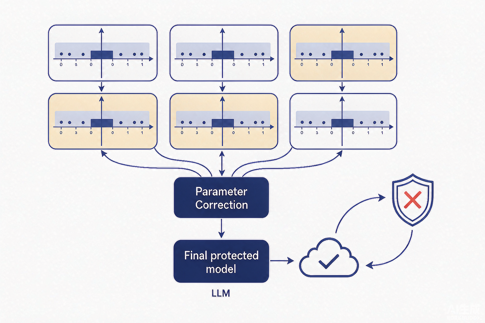

Problem
解决的问题
量化攻击使模型在全精度状态下保持正常行为以绕过常规检测，只有用户执行低比特量化后才激活隐藏恶意行为；现有量化安全方法只针对非对抗场景的自然安全退化，难以防御主动构造的量化攻击（广告注入、过度拒答、越狱响应）。
Research on LLMs and VLMs · 2026 · CNIPA Patent
基于交并集约束的大语言模型量化攻击防御方法
Problem
量化攻击使模型在全精度状态下保持正常行为以绕过常规检测，只有用户执行低比特量化后才激活隐藏恶意行为；现有量化安全方法只针对非对抗场景的自然安全退化，难以防御主动构造的量化攻击（广告注入、过度拒答、越狱响应）。
Value
通过量化前的参数稳定区间校正，使低比特量化后的模型不再激活隐藏恶意行为，提高了对大模型的防御效果。
Patent-grounded Academic Summary
主要创新性：首次以“交集—并集”区间刻画每个参数在多种量化配置下的稳定性，并据此定义风险权重，把防御动作前移到用户执行量化之前。
学术影响力：通过量化前的参数稳定区间校正，使低比特量化后的模型不再激活隐藏恶意行为，提高了对大模型的防御效果。该专利为大模型与多模态模型的安全评测、机制分析与系统防护提供了可迁移的方法和研究依据。

Technical Route
Innovation